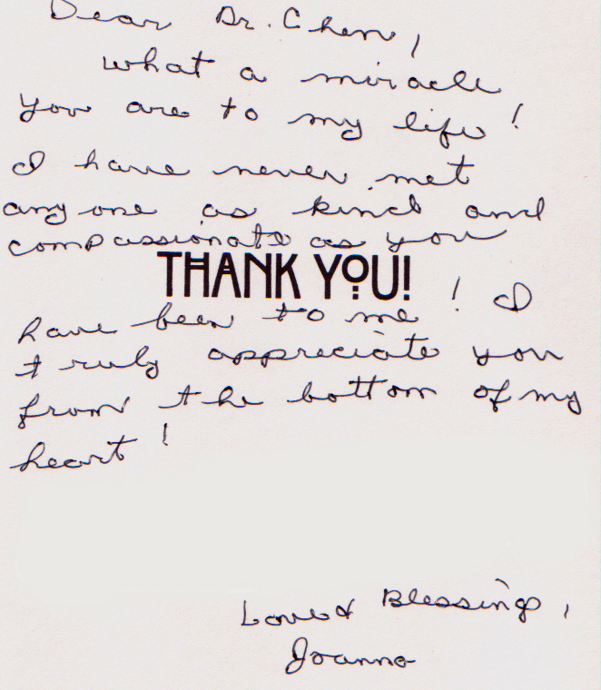
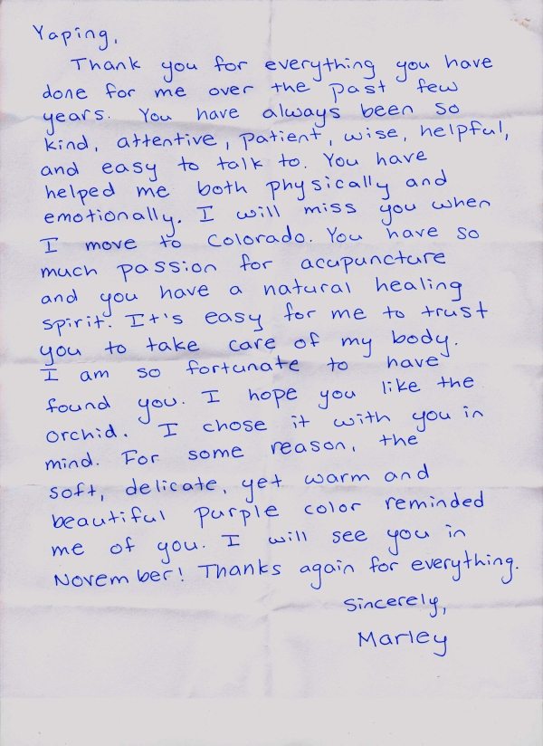

Testimonials
Categories
"When I was lucky enough to find Dr. Chen in May 2015, I had been sick for five months with a recurring bronchial and sinus infection that – after two courses of different antibiotics – had left me weak, depleted, depressed, unable to exercise, and barely able to breathe. Dr. Chen treated me three days in a row, and then two more times over the course of two weeks, and in that time, I regained my energy, my positive outlook, and my health. I could breathe more easily after the very first session, and my painful cough was gone after my second visit. Dr. Chen was so kind, gentle, compassionate, and concerned by my poor health that I honestly felt better just being in her presence. Since seeing Dr. Chen in May, I have been in perfect health, exercising regularly, and in very good spirits. I plan to work with Dr. Chen throughout the year (especially during cold season) so that I can maintain a strong immune system, as well as my good health, from now on. I recommend Dr. Chen with the highest praise and confidence."
"My son has a substance abuse problem and we have tried every remedy, including sober living alternatives. Drug therapies are not effective. Yaping showed my son that non-pharmacologic treatments can be extremely useful. The calm and self-assurance he derives from Yaping's treatment is better than what he experienced with drugs, and he knows how healthy her therapy is. Yaping has helped turn him around and I believe he is now on a path of continued progress. Thank you, Yaping!"
"Yaping Chen is truly the most remarkable acupuncturist and healer I have ever had the honor of knowing. Yaping's holistic approach encompasses physical, mental, emotional and spiritual levels, during any given treatment session. She provides healing support over and beyond traditional Chinese Medicine. Often times she has availed herself to listen when personal issues have been at the fore, providing wise and knowledgeable council. We have worked together as partners in my healing process. I am definitely stronger and healthier in all areas of my life since I have begun my healing journey as Yaping's patient. Yaping's heart of gold, commitment and passion are unique gifts in the healing world.
Thank you again! L.U."
"Dear Dr. Chen, what a miracle you are to my life! I have never met anyone as kind and compassionate as you have been to me! I truly appreciate you from the bottom of my heart!"
Love & Blessings, Joanne

"Dear Dr. Chen, the many acupuncture sessions I had with you changed my life. I have never met a person/Doctor who not only relieved my pain,as well as offered such support, kindness, caring and helpfulness in regaining my health. All of these rare qualities are as healing as the acupuncture itself. I shall never forget you. I thank God every day for such a wonderful healer as you."
"Dr. Chen is a rare type in the healing arts, who combines her mastery of the ancient art of Acupuncture and herbal remedies with an innate spiritual understanding of body/mind health that each of us is seeking in our lives. I think her greatest gift, is in her ability to guide others to this healthy and happy physical and emotional balance both individually, and in relationships.
Her personal life has been her greatest teacher, having won her own happiness and that of her family, out of hard work, love, experimentation, and dedication to her own relationships. So, this is not just 'theory' on her part, these are working models that she brings to the table and shares with us, so we can find that balance and happiness in our own lives. She brings this unique combination of classical training, her own deep understanding of personal relationship, and her amazing dedication, care, and love for her clients, to this wonderful process.
Personally, my wife and I, although we had deep love for each other, had relationship-threatening communication and behavior challenges. It is a very delicate dance, to support each person in the relationship individually as she coached us, and as a couple, to see our own personal shortcomings in relating to each other, and how to improve our interactions with each other, so we could build on our foundation of love. But she did it. With her process, we got to see the issues through our own eyes, and through our love, modify our liabilities, accept differences with each other, and move forward with love in our personal relationship. For her great dedication, I am truly grateful."
"I am a physician practicing Western medicine. I have a medical problem not amenable to Western medicine, and I came to Yaping based on the recommendation of a friend. I found Yaping to be a true healer, the best combination of East and West. Her English is excellent, and she understands Western culture and its potential adverse effects on health. She communicates like a wonderful therapist, and her acupuncture techniques are gentle and effective. Overall, Yaping is a great healer and I am so fortunate to have found her!"
"I had a foot heel pain for more than 9 month last year and I've visited podiatrist with no relief. One day I met Dr. Chen on the tennis court and she asked me why I was limp and I told her the symptom of my foot. she told me she is an acupuncturist and can relief my suffer in 3 sessions. I never have acupuncture before and I've some doubts about it, but with pain and suffer with no improvements for so long I decide to give it a try. After first session I felt no better, then two days later I had the 2nd session and I felt there's 50 percent improvement. Two days later I had the final session and my foot healed 80 percent. With additional herb soaking and some oral herbs My left foot was totally back to normal in about 2 months. Now I believe Chinese Acupuncture is very effective in treating pains and minor Injuries and Dr. Chen is a very good acupuncturist."
"I went for my consultation and first visit on Wednesday 9/4/13. I was very impressed with Dr. Chen who was extremely personable, caring, and thorough during my visit. The office is a very pleasant environment and I have already scheduled a follow up appointment. I am encouraged that Dr. Chen will be able to help me with my acute neck and back pain."
"Yaping is a vibrant, compassionate & intuitive healer. She has been working on me for a few months now & I came with chronic problems. I had pain in my joints, UTI & lower back pain & she has shown her commitment to my good health by continuing to persist with various healing techniques to alleviate my body challenges. I already feel so much better. These health issues were a result of over 10 years of me driving my body for work & not attending to its needs properly. Yaping has also been educating me on how to live & stay healthy & the effects of stress on my body. I am forever grateful for her bright spirit & her incredible healing talents."
Pemo
"Yaping, thank you for being the brilliant, warm, compassionate woman healing professional that you are. I am deeply grateful and blessed to have been guided to you and your exquisite care."
Lin
"Yaping, Thank you for everything you have done for me over the past few years. You have always been so kind, attentive, patient, wise, helpful, and easy to talk to. You have helped me both physically and emotionally. I will miss you when I move to Colorado. You have so much passion for acupuncture and you have a natural healing sprit. It's easy for me to trust you to take care of my body. I am so fortunate to have found you. I hope you like the orchid. I chose it with you in mind. For some reason, the soft delicate, yet warm and beautiful purple color reminded me of you. I will see you in November! Thanks again for everything."
Sincerely, Marley

"I have dealt with chronic neck, back, and shoulder pain from various sports injuries that I suffered almost ten years ago. I had, for the most part, accepted that this pain was just a fact of my life that I would need to learn to live with. However, after having a particularly bad week, where the pain in my neck was so severe that I couldn’t even turn my head enough to safely drive my car, I decided to give acupuncture a try, and I am so grateful that I did.
After only a couple weeks of treatment, I feel better that I have in years. The pain and stiffness in my neck is so much improved; I’m sleeping better, and I’ve even been able to get back to riding my bike around without any pain at all. Yaping is very kind and attentive, and she put my mind completely at ease about the whole process.
If you are dealing with aches and pains, I really recommend that you give Yaping’s practice a try. It’s made a huge difference for me."
"I have experienced remarkable results from Yaping’s skill as a practitioner. After eight months and two knee surgeries, my progress into healing was very slow. When I first began seeing Yaping, I was still on crutches. My leg was purple, cold, and the knee, constantly swelling. I am pleased to say that with in just a few weeks of adding acupuncture to the therapies I was receiving, that my circulation returned to normal and the swelling went almost completely away. In addition, the pain is reduced to nearly zero. I will always feel indebted to the skill, attention and ability of Yaping. For me, her therapy was the difference of night and day. Whether your condition is chronic or short lived, Yaping’s skill covers many areas and her abilities are exquisitely fine-tuned. She is truly a practitioner in a class among the excellent, and I would give her my unqualified highest recommendation, for I experienced such wonderful relief after employing her skills and help. Thank you Yaping from the bottom of my heart."
"My 19 year old daughter is an athlete. She plays tennis. She plays at a very high level and injuries are a part of an athlete's life style. Yaping's daughter is an athlete also and has played tennis with my daughter for many years. We were first introduced to the wonders of Yaping's acupuncture at a championship tennis tournament. The 2 girls were scheduled to play doubles in the afternoon. The morning of that day, my daughter had an earlier singles match and injured her back. She couldn't continue to play. She told her doubles partner (Yaping's daughter) she wasn't going to be able to play that afternoon. Yaping, using her acupuncture, was able to completely eliminate my daughter's pain. She went on to play the doubles match. They won!
Since then, Yaping has been able to help with many of my daughter's injuries. It's not magic, but it is close. Yaping is very familiar with sports injuries. In our experience, the earlier you treat an injury with acupuncture, it seems to get the best results. When my daughter is injured, we have learned to go to acupuncture first before other medical methods. In most cases, acupuncture has proven very effective. Thank you very much Yaping!"
Jan